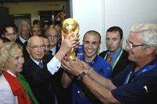

ФУТБОЛ
Футбол - командный вид спорта, в котором целью является забить мяч в ворота соперника ногами или другими частями тела (кроме рук) большее количество раз, чем команда соперника. В настоящее время самый популярный и массовый вид спорта в мир
В XIX веке футбол в Англии приобрёл популярность, сравнимую с крикетом. В него играли в основном в колледжах. В некоторых колледжах правила разрешали ведение и передачу мяча руками, в других это, напротив, запрещалось. Первая попытка создать единые правила была предпринята в 1846 году, когда встретились представители нескольких колледжей. Они установили первый свод правил[17]. В 1857 году был основан первый специализированный футбольный клуб — «Шеффилд». В 1863 году после долгих переговоров был принят свод правил Футбольной Ассоциации Англии. Также были приняты размеры поля и ворот. А в 1871 году был основан Кубок Англии — старейший футбольный турнир в мире. В 1891 году было принято правило о пенальти. Но сначала пенальти билось не с точки, а с линии, которая так же, как и сейчас, находилась на расстоянии 11 метров от ворот.